Expresiones comunes
El sentido del humor tiende a ser algo incomprendido, especialmente en este sitio. Usualmente se hacen referencias a Vines o a chistes sobre la muerte/depresión de uno mismo. A continuación una lista de expresiones en inglés recurrentes (no se alarmen, es normal):
- "Jesus take the wheel"
- Referirse a la genete de Tumblr como "y'all" (abreviatura de "you all" - "todos ustedes")
- "My last two brain cells"
- "I'm crying", "I'm litteraly in tears", "I'm gonna to cry", "I've never laughed so hard in my life"
- Cualquier cosa seguida por muchos signos de pregunta, incluso si no es una pregunta??
- "Cute cinnamon roll too pure to this world"
- "It got better"
- "This post is a mess"
- "Things heating up in the fandom"
- "That's what she said"
- X cosa "cured my depression"
- Alguna acción "in Spanish"
Los memes
A esta altura creo que ya todos saben qué es un meme, pero igual lo aclaro para aquella persona que no lo sepa: es una imagen/video/texto/expresión graciosa que se vuelve viral en internet. Imagínense lo siguiente: si en Facebook era tremendamente populares, ¿cómo serían en Tumblr? La respuesta es simple: Tumblr está lleno de memes... LLENO (y son lo mejor que le pasó al universo a veces).
A continuación:
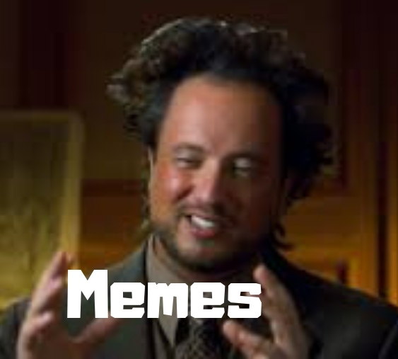
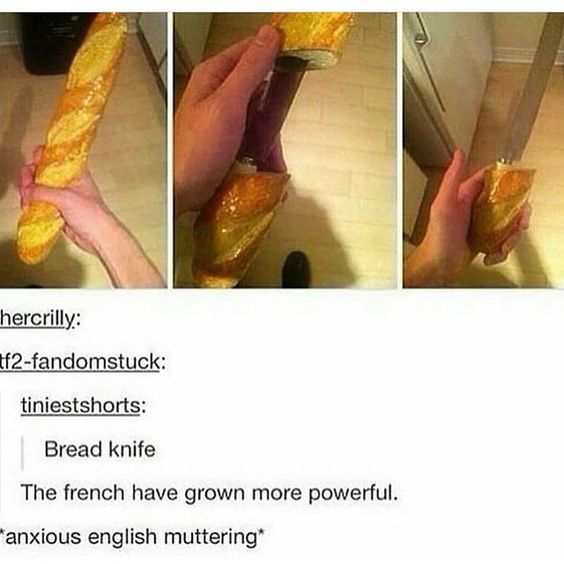
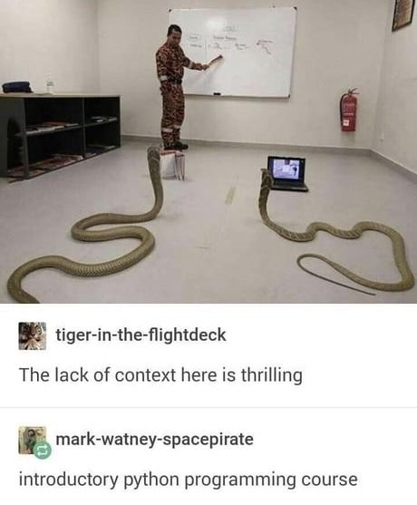
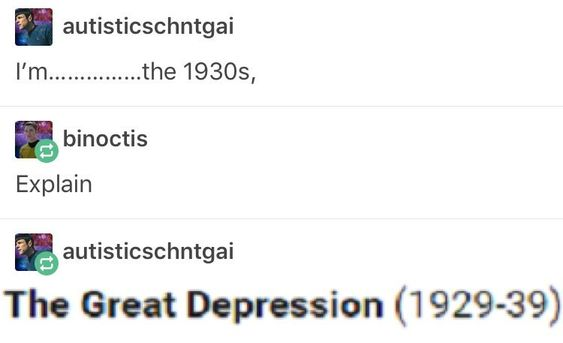
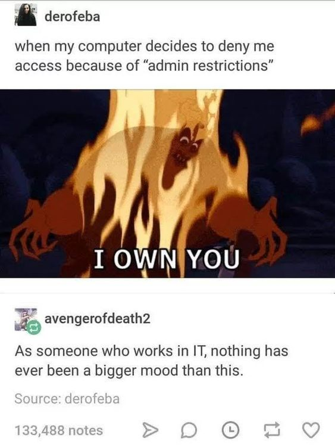
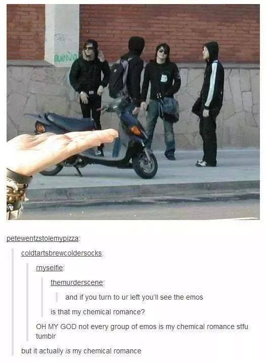
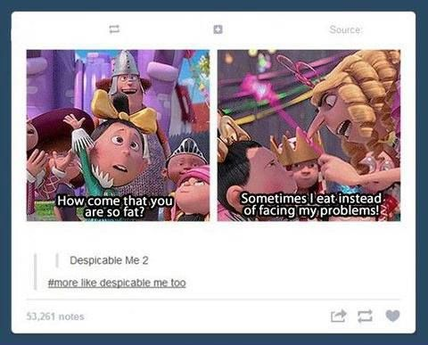
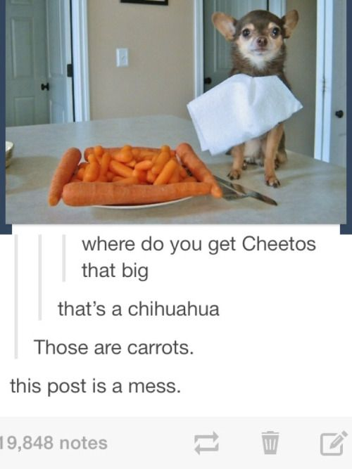
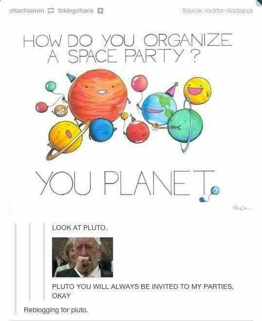
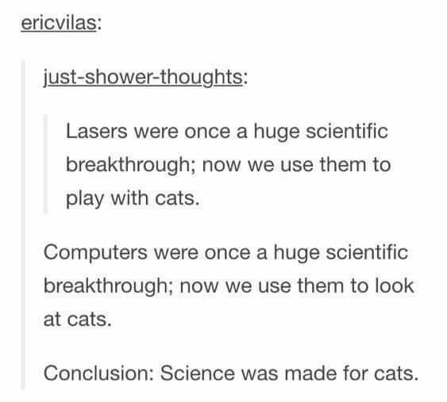
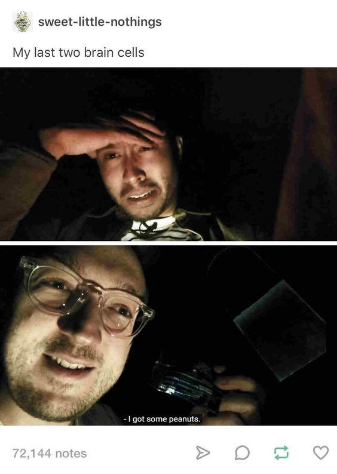